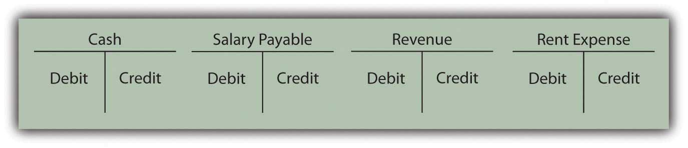
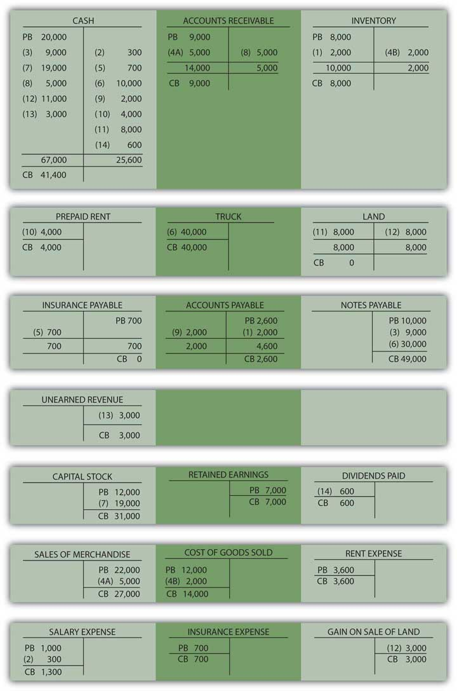

Joe introduces Chapter 4 "How Does an Organization Accumulate and Organize the Information Necessary to Prepare Financial Statements? " and speaks about the course in general.
At the end of this section, students should be able to meet the following objectives:
Question: Information provided by a set of financial statements is essential to any individual analyzing a business or other organization. The availability of a fair representation of a company’s financial position, operations, and cash flows is invaluable for a wide array of decision makers. However, the sheer volume of data that a company such as General Mills, McDonald’s, or PepsiCo must gather in order to prepare these statements has to be astronomical. Even a small enterprise—a local convenience store, for example—generates a significant quantity of information virtually every day. How does an accountant begin the process of accumulating all the necessary data so that financial statements can eventually be produced?
Answer: The accounting process starts by analyzing the effect of transactionsEvents that have a financial impact on an organization that must be gathered, sorted, classified and turned into financial statements by means of an accounting system.—any event that has a financial impact on a company. Large organizations participate in literally millions of transactions each year that must be gathered, sorted, classified, and turned into a set of financial statements that cover a mere four or five pages. Over the decades, accountants have had to become very efficient to fulfill this seemingly impossible assignment. Despite the volume of transactions, the goal remains the same: to prepare financial statements that are presented fairly because they contain no material misstatements according to U.S. generally accepted accounting principles (U.S. GAAP).
For example, all the occurrences listed in Figure 4.1 "Transactions Frequently Encountered" are typical transactions that any company might encounter. Each causes some measurable effect on a company’s assets, liabilities, revenues, expenses, gains, losses, capital stock, or dividends paid. The accounting process begins with an analysis of each transaction to determine the financial changes that took place. Was revenue earned? Did a liability increase? Has an asset been acquired?
Figure 4.1 Transactions Frequently Encountered

In any language, successful communication is only possible if the information to be conveyed is properly understood. Likewise, in accounting, transactions must be analyzed so their impact is understood. A vast majority of transactions are relatively straightforward so that, with experience, the accountant can ascertain the financial impact almost automatically. For transactions with greater complexity, the necessary analysis becomes more challenging. However, the importance of this initial step in the production of financial statements cannot be overstressed. The well-known computer aphorism captures the essence quite succinctly: “garbage in, garbage out.” There is little hope that financial statements can be fairly presented unless the entering data are based on an appropriate identification of the changes created by each transaction.
Link to multiple-choice question for practice purposes: http://www.quia.com/quiz/2092626.html
Question: Transaction 1—A company buys inventory on credit for $2,000. How does transaction analysis work here? What accounts are affected by this purchase?
Answer: Inventory, which is an asset, increases by $2,000. The organization has more inventory than it did prior to the purchase. Because no money has yet been paid for these goods, a liability for the same amount has been created. The term accounts payableShort-term liabilities to pay for goods and services that have been acquired. is often used in financial accounting to represent debts resulting from the acquisition of inventory and supplies.
inventory (asset) increases by $2,000 accounts payable (liability) increases by $2,000Note that the accounting equation described in the previous chapter remains in balance. Assets have gone up by $2,000 while the liability side of the equation has also increased by the same amount to reflect the source of this increase in the company’s assets.
Link to multiple-choice question for practice purposes: http://www.quia.com/quiz/2092605.html
Question: Transaction 2—A company pays a salary of $300 to one of its employees for work performed during the past week. No amount had previously been recorded by the accounting system for this amount. What accounts are affected by this salary payment?
Answer: Cash (an asset) is decreased here by $300. Whenever cash is involved in a transaction, determining that change is a good place to start the analysis. Increases and decreases in cash are often obvious.
The cash balance declined here because salary was paid to an employee. Assets were reduced as a result of the payment. That is a cost to the company. Thus, a salary expense of $300 is reported. Recognizing an expense is appropriate rather than an asset because the employee’s work reflects a past benefit. The effort has already been carried out, generating revenues for the company in the previous week rather than in the future.
salary expense (expense) increases by $300 cash (asset) decreased by $300The continued equilibrium of the accounting equation does exist here although it is less obvious. Assets are decreased. At the same time, an expense is recognized. This expense reduces reported net income. On the statement of retained earnings, current net income becomes a component of retained earnings. The reduction in income here serves to decrease retained earnings. Because both assets and retained earnings go down by the same amount, the accounting equation continues to balance.
Question: In Transaction 2, the company paid a salary of $300 that it owed to a worker. Why does a payment to an employee not reduce a salary payable balance?
Answer: Costs such as salary, rent, or interest increase gradually over time and are often referred to as accrued expenses because the term “accrue” means “to grow.” An accounting system can be mechanically structured to record such costs in either of two ways. The results are the same but the steps in the process differ.
A company can recognize an accrued expense (such as a salary) as incurred or wait until payment. This decision depends on the preference of company officials. The end result (an expense is reported and cash decreased) is the same, but the recording procedures differ. As will be discussed, if no entry has been made for such costs prior to the production of financial statements (the first alternative), both the expense and the payable do have to be recognized at that time so that all balances are properly stated for reporting purposes.
Link to multiple-choice question for practice purposes: http://www.quia.com/quiz/2092606.html
Question: Transaction 3—A company borrows $9,000 from a bank. What is the impact of signing a loan agreement with a bank or other lending institution?
Answer: Cash is increased by the amount of money received from the lender. The company is obligated to repay this balance and, thus, has incurred a new liability. As with many transactions, the financial impact is reasonably easy to ascertain.
cash (asset) increases by $9,000 note payable (liability) increases by $9,000Most organizations must gather an enormous quantity of information as a prerequisite for preparing financial statements periodically. This process begins with an analysis of the impact of each transaction (financial event). After the effect on all account balances is ascertained, the recording of a transaction is relatively straightforward. The changes caused by most transactions—the purchase of inventory or the signing of a note, for example—can be determined quickly. For accrued expenses, such as salary or rent that grow over time, the accounting system can record the amounts gradually as incurred or only at the point of payment. However, the figures to be reported are not impacted by the specific mechanical steps that are taken.
At the end of this section, students should be able to meet the following objectives:
Question: Transaction 4—The inventory items that were bought in Transaction 1 for $2,000 are now sold for $5,000 on account. What balances are impacted by the sale of merchandise in this manner?
Answer: Two things actually happen in the sale of inventory. First, revenue of $5,000 is generated by the sale. Because the money will not be collected until a later date, accounts receivable (an asset) is initially increased. The reporting of receivable balance indicates that this amount is due from a customer and should be collected at some subsequent point in time.
accounts receivable (asset) increases by $5,000 sales (revenue) increases by $5,000Second, the inventory is removed. Companies have an option in the method by which inventory balances are monitored. Here, a perpetual inventory systemAccounting system that maintains an ongoing record of all inventory items; records increases and decreases in inventory accounts as they occur as well as the cost of goods sold to date. will be utilized. That approach has become extremely common due to the prevalence of computer systems in the business world. It maintains an ongoing record of the inventory held and the amount that has been sold to date. All changes in inventory are recorded immediately. However, in a later chapter, an alternative approach—still used by some companies—known as a periodic inventory systemAccounting system that does not maintain an ongoing record of all inventory items; instead, ending inventory is determined by a physical count so that a formula (beginning inventory plus purchases less ending inventory) can be used to determine cost of goods sold. will also be demonstrated.
Since a perpetual system is being used here, the reduction in inventory is recorded simultaneously with the sale. An expense is incurred as inventory costing $2,000 is taken away by the customer. The company’s assets are reduced by this amount. Cost of goods sold (an expense) is recognized to reflect this decrease in the amount of merchandise on hand.
cost of goods sold (expense) increases by $2,000 inventory (asset) decreases by $2,000The $3,000 difference between the sales revenue of $5,000 and the related cost of goods sold of $2,000 is known as the gross profit (or gross margin or mark up) on the sale.
Link to multiple-choice question for practice purposes: http://www.quia.com/quiz/2092607.html
Question: In each event that has been studied so far, two accounts have been affected. Are two accounts impacted by every possible transaction?
Answer: In every transaction, a cause and effect relationship is always present. For example, accounts receivable increases because of a sale. Cash decreases as a result of paying salary expense. No account can possibly change without some identifiable cause. Thus, every transaction must touch a minimum of two accounts. Many transactions actually affect more than two accounts but at least two are impacted by each of these financial events.
Question: Transaction 5—The reporting company pays $700 for insurance coverage relating to the past few months. The amount was previously recorded in the company’s accounting system as the cost was incurred. Apparently, computers were programmed to accrue this expense periodically. What is the financial impact of paying for an expense if the balance has already been recognized over time as the liability grew larger?
Answer: Several pieces of information should be noted here as part of the analysis.
The expense cannot be recorded again or it will be double-counted. Instead, cash is reduced along with the liability established through the accrual process. The expense was recorded already so no additional change in that balance is needed. Instead, the liability is removed and cash decreased.
insurance payable (liability) decreases by $700 cash (asset) decreases by $700Note that accounting recognition is often dependent on the recording that has taken place. The final results should be the same (here an expense is recognized and cash decreased), but the steps in the process can vary.
Link to multiple-choice question for practice purposes: http://www.quia.com/quiz/2092608.html
Question: Transaction 6—A truck is acquired for $40,000 but only $10,000 in cash is paid by the company. The other $30,000 is covered by signing a note payable. This transaction seems to be a bit more complicated because more than two figures are involved. What is the financial impact of buying an asset when only a portion of the cash is paid on that date?
Answer: In this transaction, for the first time, three accounts are impacted. A truck is bought for $40,000, so the recorded balance for this asset is increased by that cost. Cash decreases $10,000 while the notes payable balance rises by $30,000. These events each happened. To achieve a fair presentation, the accounting process seeks to reflect the actual occurrences that took place. As long as the analysis is performed properly, recording a transaction is no more complicated when more than two accounts are affected.
truck (asset) increases by $40,000 cash (asset) decreases by $10,000 notes payable (liability) increases by $30,000
Question: Transaction 7—Assume that several individuals approach the company and offer to contribute $19,000 in cash to the business in exchange for capital stock so that they can join the ownership. The offer is accepted. What accounts are impacted by the issuance of capital stock to the owners of a business?
Answer: When cash is contributed to a company for a portion of the ownership, cash obviously goes up by the amount received. This money was not generated by revenues or by liabilities but rather represents assets given freely so that new ownership shares could be issued. This inflow is reflected in the financial statements as increases in the cash and capital stock accounts. Outside decision makers can see that this amount of the company’s net assets came from investments made by owners.
cash (asset) increases by $19,000 capital stock (stockholders’ equity) increases by $19,000Link to multiple-choice question for practice purposes: http://www.quia.com/quiz/2092640.html
Question: Transaction 8—A sale of merchandise was made previously in Transaction 4 for $5,000. No cash was received at that time but is collected now. What accounts are affected by the receipt of money from an earlier sale?
Answer: The revenue from this transaction was properly recorded previously in Transaction 4 when the sale originally took place and the account receivable balance was established. Revenue should not be recorded again or it will be double-counted causing reported net income to be overstated. Instead, the accountant indicates that this increase in cash is caused by the decrease in the accounts receivable balance.
cash (asset) increases by $5,000 accounts receivable (asset) decreases by $5,000
Question: Transaction 9—Inventory was bought in Transaction 1 for $2,000 and later sold in Transaction 4. Now, however, the company is ready to make payment on the amount owed for this merchandise. When cash is delivered to settle a previous purchase of inventory, what is the financial effect of the transaction?
Answer: As a result of the payment, cash is decreased by $2,000. The inventory was recorded previously when acquired. Therefore, this new transaction does not replicate that effect. Instead, the liability established in number 1 is removed from the books. The company is not buying the inventory again but simply paying the debt established for these goods.
accounts payable (liability) decreases by $2,000 cash (asset) decreases by $2,000Link to multiple-choice question for practice purposes: http://www.quia.com/quiz/2092627.html
Question: Transaction 10—The company wants to rent a building to use for the next four months and pays the property’s owner $4,000 to cover this cost. When a rent or other payment provides the company with a future benefit, what recording is appropriate?
Answer: In acquiring the use of this property, the company’s cash decreases by $4,000. The money was paid in order to utilize the building for four months in the future. The anticipated economic benefit is an asset and should be reported to decision makers by establishing a prepaid rent balance. The reporting company has paid to use the property at a designated time in the future to help generate revenues.
prepaid rent (asset) increases $4,000 cash (asset) decreases by $4,000Accountants cannot record transactions without understanding the impact that has occurred. Whether inventory is sold or an account receivable is collected, at least two accounts are always affected because all such events have both a cause and a financial effect. Individual balances rise or fall depending on the nature of each transaction. The payment of insurance, the collection of a receivable, a capital contribution, and the like all cause very specific changes in account balances. One of the most common is the sale of inventory where both an increase in revenue and the removal of the merchandise takes place. Increases and decreases in inventory are often monitored by a perpetual system that reflects all such changes immediately. In a perpetual system, cost of goods sold—the expense that measures the cost of inventory acquired by a company’s customers—is recorded at the time of sale.
At the end of this section, students should be able to meet the following objectives:
Question: Transaction analysis determines the changes in account balances as the events of each day take place. Financial statements provide a formal structure to communicate the resulting balances periodically to an array of interested parties. Revenues, expenses, gains, and losses are presented on an income statement where they are combined to arrive at reported net income for the period. Total income earned and dividends paid by the company over its entire life are netted to compute the current retained earnings balance. Assets, liabilities, capital stock, and retained earnings are all displayed on a balance sheet. Changes in cash are separated into operating activities, investing activities, and financing activities and disclosed on a statement of cash flows. Notes offer pages of additional explanatory information. The amount of financial data that is readily available is impressive.
The accountant for a business of any significant size faces a daunting challenge in creating financial statements: gathering, measuring, and reporting the impact of the many varied events that occur virtually every day. As an example, for 2008, Xerox Corporation disclosed revenues of over $17.6 billion and operating expenses and other costs of $17.4 billion. At the end of 2008, the Kellogg Company reported holding $897 million in inventory—which is a lot of cereal—and indicated that its operating activities that year generated a net cash inflow of nearly $1.3 billion. How can any organization possibly amass and maintain such an enormous volume of data so that financial statements can be produced with no material misstatements?
Answer: Over five hundred years ago, Venetian merchants in Italy developed a system that continues to serve in the twenty-first century as the basis for accumulating financial data throughout much of the world. Today, when every aspect of modern society seems to be in a constant state of flux, a process that has remained in use for over five centuries is almost impossible to comprehend. However, the double-entry bookkeepingA mechanical process created over five hundred years ago and documented by Fra Luca Bartolomeo de Pacioli that facilitates the gathering and reporting of financial information. procedures that were first documented in 1494 by Fra Luca Bartolomeo de Pacioli (a friend of Leonardo da Vinci) remain virtually unchanged by time. Organizations, both small and large, use the fundamentals of double-entry bookkeeping to collect the information needed to produce financial statements that are fairly presented according to the rules of U.S. GAAP.
Question: This assertion sounds like science fiction. It hardly seems believable that Xerox keeps up with over $17.6 billion in revenue (approximately $48 million per day) using the same methods that Venetian merchants applied to their transactions during the Renaissance. How can a five-hundred-year-old bookkeeping system possibly be usable by today’s modern businesses?
Answer: State-of-the-art computers and other electronic devices are designed to refine and accelerate the financial accounting process but the same basic organizing procedures have been utilized now for hundreds of years. In simplest terms, accounting systems are all created to follow four sequential steps:
As explained previously, financial accounting starts by analyzing each transaction—every event that has a monetary impact on the organization—to ascertain the changes created in accounts such as rent expense, cash, inventory, and dividends paid. Fortunately, a vast majority of any company’s transactions are repetitive so that many of the effects can be easily anticipated. A sale on credit always increases both accounts receivable and revenues. Regardless of the time or place, a cash purchase of equipment increases the balance reported for equipment while decreasing cash. Computer systems can be programmed to record the impact of these events automatically allowing the accountant to focus on analyzing more complex transactions.
Question: The second step in the accounting system is listed above as “record.” At the beginning of this chapter, a number of transactions were presented and their impact on individual accounts determined. Following this analysis, some method has to be devised to capture the information in an orderly fashion. Officials could just list the effect of each transaction on a sheet of paper: increase inventory $2,000 and increase accounts payable $2,000; increase salary expense $300 and decrease cash $300. However, this process is slow and poorly organized. A more efficient process is required. What is the key to recording transactions after all account changes are identified?
Answer: An essential step in understanding the accounting process is to realize that financial information is accumulated by accountsDetailed records of the transactions and current balances of specific assets, liabilities, stockholders’ equity, revenues and expenses.. Every balance to be reported in a company’s financial statements is maintained in a separate account. Thus, for assets, an individual account is established to monitor cash, accounts receivable, inventory, and so on. To keep track of expenses, a number of additional accounts are needed, such as cost of goods sold, rent expense, salary expense, and repair expense. The same is true for revenues, liabilities, and other categories. A small organization might utilize only a few dozen accounts for its entire recordkeeping system. A large company could have thousands.
Based on the original Venetian model, the balance for each account is monitored in a form known as a T-accountUsed to maintain the monetary balance for each of the accounts reported by an organization with a left (debit) side and a right (credit) side. as displayed in Figure 4.2 "Common T-Accounts". This structure provides room for recording on both the left side (known as the debitLeft side of a T-account; it is used to show increases in assets, expenses, and dividends paid and decreases in liabilities, contributed capital, and revenues. side) and the right side (the creditRight side of a T-account used to show increases in liabilities, shareholders’ equity, and revenues and decreases in assets, expenses, and dividends paid. side).
Figure 4.2 Common T-Accounts
One side of each T-account records increases; the other side indicates decreases. For over five hundred years, the following rules have applied.
The following are accounts where debits reflect an increase and credits a decrease:
The following are accounts where credits reflect an increase and debits a decrease:
The debit and credit rules for these seven general types of accounts provide a short-hand method for recording the financial impact that a transaction has on any account. They were constructed in this manner so that the following would be true:
debits must always equal credits for every transaction.At first, the debit and credit rules might seem completely arbitrary. However, they are structured to mirror the cause and effect relationship found in every transaction. This is the basis of what the Venetian merchants came to understand so long ago: every effect must have a cause.
To illustrate:
There are only seven types of accounts. Therefore, a mastery of debit and credit rules can be achieved with a moderate amount of practice. Because of the fundamental position of debits and credits within every accounting system, this knowledge is well worth the effort required.
Link to multiple-choice question for practice purposes: http://www.quia.com/quiz/2092609.html
Most companies participate in numerous transactions each day that must be examined and organized so that financial statements can be prepared. This process requires four steps: analyze, record, adjust, and report. Over five hundred years ago, double-entry bookkeeping was created as a mechanical process to facilitate this gathering and reporting of financial information. A T-account is maintained for each of the accounts (such as cash, accounts payable, and rent expense) to be reported by a company. The left side of the T-account is the debit side, and the right side is the credit. Expenses and losses, assets, and dividends paid increase with debits. Liabilities, revenues and gains, capital stock, and retained earnings increase with credits. Debits always equal credits because every transaction must have both an effect and a cause for that effect.
At the end of this section, students should be able to meet the following objectives:
Question: In an accounting system, the impact of each transaction is analyzed and must then be recorded. Debits and credits are used for this purpose. How does the actual recording of a transaction take place?
Answer: The effects produced on the various accounts by a transaction should be entered into the accounting system as quickly as possible so that information is not lost and mistakes have less time to occur. After analyzing each event, the financial changes caused by a transaction are initially recorded as a journal entryThe physical form used initially in double-entry bookkeeping to record the financial changes caused by a transaction; must have at least one debit and one credit and the total debit(s) always equal the total credit(s)..In larger organizations, similar transactions are often grouped, summed, and recorded together for efficiency. For example, all cash sales at one store might be totaled automatically and recorded at one time at the end of each day. To help focus on the mechanics of the accounting process, the journal entries recorded for the transactions in this textbook will be prepared individually. A list of all recorded journal entries is maintained in a journalThe physical location of all journal entries; the diary of an organization capturing the impact of financial events as they took place; it is also referred to as the general journal. (also referred to as a general journalThe physical location of all journal entries; the diary of a company capturing the impact of financial events as they took place; it is also referred to as the journal.), which is one of the most important components within any accounting system. The journal is the diary of the company: the history of the impact of the financial events as they took place.
A journal entry is no more than an indication of the accounts and balances that were changed by a transaction.
Question: Debit and credit rules are best learned through practice. In order to grasp the use of debits and credits, how should the needed practice begin?
Answer: When faced with debits and credits, everyone has to practice at first. That is normal and to be expected. These rules can be learned quickly but only by investing a bit of effort. Earlier in this chapter, a number of transactions were analyzed to determine their impact on account balances. Assume now that these same transactions are to be recorded as journal entries. To provide a bit more information for this illustration, the reporting company will be a small farm supply store known as the Lawndale Company that is located in a rural area. For convenience, assume that the company incurs these transactions during the final few days of Year One, just prior to preparing financial statements.
Assume further that this company already has the account balances presented in Figure 4.3 "Balances Taken From T-accounts in Ledger" in its T-accounts before making this last group of journal entries. Note that the total of all the debit and credit balances do agree ($54,300) and that every account shows a positive balance. In other words, the figure being reported is either a debit or credit based on what makes that particular type of account increase. Few T-accounts contain negative balances.
This current listing of accounts is commonly referred to as a trial balanceList of account balances as shown at a point in time for each of the T-accounts maintained in the company’s ledger; eventually, financial statements are created using these balances.. Since T-accounts are kept together in a ledger (or general ledger), a trial balance reports the individual balances for each T-account maintained in the company’s ledger.
Figure 4.3 Balances Taken From T-accounts in Ledger
Question: Assume that after the above balances were determined, several additional transactions took place. The first transaction analyzed at the start of this chapter was the purchase of inventory on credit for $2,000. This acquisition increases the record of the amount of inventory being held while also raising one of the company’s liabilities, accounts payable. How is the acquisition of inventory on credit recorded in the form of a journal entry?
Answer: Following the transactional analysis, a journal entry is prepared to record the impact that the event has on the Lawndale Company. Inventory is an asset that always uses a debit to note an increase. Accounts payable is a liability so that a credit indicates that an increase has occurred. Thus, the following journal entry is appropriate. The parenthetical information is included here only for clarification purposes and does not appear in a true journal entry.
Figure 4.4 Journal Entry 1: Inventory Acquired on Credit

Notice that the word “inventory” is physically on the left of the journal entry and the words “accounts payable” are indented to the right. This positioning clearly shows which account is debited and which is credited. In the same way, the $2,000 numerical amount added to the inventory total appears on the left (debit) side whereas the $2,000 change in accounts payable is clearly on the right (credit) side.
Preparing journal entries is obviously a mechanical process but one that is fundamental to the gathering of information for financial reporting purposes. Any person familiar with accounting procedures could easily “read” the above entry: based on the debit and credit, both inventory and accounts payable have gone up so a purchase of merchandise for $2,000 on credit is indicated. Interestingly, with translation of the words, a Venetian merchant from the later part of the fifteenth century would be capable of understanding the information captured by this journal entry even if prepared by a modern company as large as Xerox or Kellogg.
Question: As a second example, the Lawndale Company pays its employees their regular salary of $300 for work performed during the past week. If no entry has been recorded previously, what journal entry is appropriate when a salary payment is made?
Answer: Because no entry has yet been made, neither the $300 salary expense nor the related salary payable already exists in the accounting records. Apparently, the $1,000 salary expense appearing in the above trial balance reflects earlier payments made during the period by the company to its employees.
Payment is made here for past work so this cost represents an expense rather than an asset. Thus, the balance recorded as salary expense goes up by this amount while cash decreases. Increasing an expense is always shown by means of a debit; decreasing an asset is reflected through a credit.
Figure 4.5 Journal Entry 2: Salary Paid to Employees
In practice, the date of each transaction could also be included here. For illustration purposes, this extra information is not necessary.
Question: Assume $9,000 is borrowed from a local bank when officials sign a new note payable that will have to be repaid in several years. What journal entry is prepared by a company’s accountant to reflect the inflow of cash received from a loan?
Answer: As always, recording begins with an analysis of the transaction. Here, cash increases as the result of the incurred debt (notes payable). Cash—an asset—increases $9,000, which is shown as a debit. The company’s notes payable balance also goes up by the same amount. As a liability, the increase is recorded through a credit. By using debits and credits in this way, the financial effects are entered into the accounting records.
Figure 4.6 Journal Entry 3: Money Borrowed from Bank

Link to multiple-choice question for practice purposes: http://www.quia.com/quiz/2092610.html
Question: In Transaction 1, inventory was bought for $2,000. That entry is recorded above. Assume now that these goods are sold for $5,000 to a customer on credit. How is the sale of merchandise on account recorded in journal entry form?
Answer: As discussed previously, two events really happen when inventory is sold. First, the sale is made and, second, the customer takes possession of the merchandise from the company. Assuming again that a perpetual inventory system is in use, both the sale and the related expense are recorded immediately. In the initial part of the transaction, the accounts receivable balance goes up $5,000 because the money from the customer will not be collected until a later date. The increase in this asset is shown by means of a debit. The new receivable resulted from a sale. Revenue is also recorded (by a credit) to indicate the cause of that effect.
Figure 4.7 Journal Entry 4A: Sale Made on Account

At the same time, inventory costing $2,000 is surrendered by the company. The reduction of any asset is recorded through a credit. The expense resulting from the asset outflow has been identified previously as “cost of goods sold.” Like any expense, it is entered into the accounting system through a debit.
Figure 4.8 Journal Entry 4B: Merchandise Acquired by Customers

Question: In the above transaction, the Lawndale Company made a sale but the cash will not be collected until some later date. Why is revenue reported at the time of sale rather than when the cash is eventually collected? Accounting is conservative. Thus, delaying recognition of sales revenue (and the resulting increase in net income) until the $5,000 is physically received might have been expected.
Answer: This question reflects a common misconception about the information conveyed through financial statements. As shown above in Journal Entry 4A, recognition of revenue is not tied directly to the receipt of cash. One of the most important elements comprising the structure of U.S. GAAP is accrual accountingSystem required by U.S. GAAP to standardize the timing of the recognition of revenues and expenses; it is made up of the revenue realization principle and the matching principle., which serves as the basis for timing the reporting of revenues and expenses. Because of the direct impact on net income, such recognition issues are among the most complicated and controversial in accounting. The accountant must always determine the appropriate point in time for reporting each revenue and expense. Accrual accounting provides standard guidance (in the United States and throughout much of the world).
Accrual accounting is really made up of two distinct components. The revenue realization principleThe portion of accrual accounting that guides the timing of revenue recognition; it states that revenue is properly recognized at the point that the earning process needed to generate the revenue is substantially complete and the amount to be received can be reasonably estimated. provides authoritative direction as to the proper timing for the recognition of revenue. The matching principleThe portion of accrual accounting that guides the timing of expense recognition; it states that expense is properly recognized in the same time period as the revenue that it helped generate. establishes guidelines for the reporting of expenses. These two principles have been utilized for decades in the application of U.S. GAAP. Their importance within financial accounting can hardly be overstated.
Revenue realization principle. Revenue is properly recognized at the point that (1) the earning process needed to generate the revenue is substantially complete and (2) the amount eventually to be received can be reasonably estimated. As the study of financial accounting progresses into more complex situations, both of these criteria will require careful analysis and understanding.
Matching principle. Expenses are recognized in the same time period as the revenue they help create. Thus, if specific revenue is to be recognized in the year 2019, any associated costs should be reported as expenses in that same time period. Expenses are matched with revenues. However, when a cost cannot be tied directly to identifiable revenue, matching is not possible. In those cases, the expense is recognized in the most logical time period, in some systematic fashion, or as incurred—depending on the situation.
For the revenue reported in Journal Entry 4A, assuming that the Lawndale Company has substantially completed the work required of this sale and $5,000 is a reasonable estimate of the amount that will be collected, recognition at the time of sale is appropriate. Because the revenue is recognized at that moment, the related expense (cost of goods sold) should also be recorded as can be seen in Journal Entry 4B.
Accrual accounting provides an excellent example of how U.S. GAAP guides the reporting process in order to produce fairly presented financial statements that can be understood by all decision makers around the world.
Link to multiple-choice question for practice purposes: http://www.quia.com/quiz/2092642.html
After the financial effects are analyzed, the impact of each transaction is recorded within a company’s accounting system through a journal entry. The purchase of inventory, payment of a salary, and borrowing of money are all typical transactions that are recorded by means of debits and credits. All journal entries are maintained within the company’s journal. The timing of this recognition is especially important in connection with revenues and expenses. Accrual accounting provides formal guidance within U.S. GAAP. Revenues are recognized when the earning process is substantially complete and the amount to be collected can be reasonably estimated. Expenses are recognized based on the matching principle, which holds that they should be reported in the same period as the revenue they help generate.
At the end of this section, students should be able to meet the following objectives:
Question: The Lawndale Company pays $700 for insurance coverage received over the past few months. In this case, though, the amount has already been recognized by the company. Both the insurance expense and an insurance payable were recorded as incurred. Thus, the amounts can be seen on the trial balance in Figure 4.3 "Balances Taken From T-accounts in Ledger". Apparently, Lawndale’s accounting system was designed to recognize this particular expense as it grew over time. When an expense has already been recorded, what journal entry is appropriate at the time actual payment is made?
Answer: Because of the previous recognition, the expense should not now be recorded a second time. Instead, this payment reduces the liability that was established by the accounting system. Cash—an asset—is decreased, which is shown by means of a credit. At the same time, the previously recorded payable is removed. Any reduction of a liability is communicated by a debit. To reiterate, no expense is included in this entry because that amount has already been recognized.
Figure 4.9 Journal Entry 5: Liability for Insurance Is Paid
Note that Journal Entries 2 and 5 differ although the events are similar. As discussed previously, specific recording techniques can be influenced by the manner in which the accounting system has handled earlier events. In Journal Entry 2, neither the expense nor the payable had yet been recorded. Thus, the expense was recognized at the time of payment. For Journal Entry 5, both the expense and payable had already been entered into the records as the amount gradually grew over time. Hence, when paid, the liability is settled but no further expense is recognized. The proper amount is already present in the insurance expense T-account.
Question: Assume that a new truck is acquired by the Lawndale Company for $40,000. Cash of $10,000 is paid now but a note payable—due in several years—is signed for the remaining $30,000. This transaction impacts three accounts rather than just two. How is a journal entry constructed when more than two accounts have been affected?
Answer: As has been discussed, every transaction changes at least two accounts because of the cause and effect relationship underlying all financial events. However, beyond that limit, any number of accounts can be impacted. Complex transactions often touch numerous accounts. Here, the truck account (an asset) is increased and must be debited. Part of the acquisition was funded by paying cash (an asset) with the decrease recorded as a credit. The remainder of the cost was covered by signing a note payable (a liability). A liability increase is recorded by means of a credit. Note that the debits do equal the credits even when more than two accounts are affected by a transaction.
Figure 4.10 Journal Entry 6: Truck Acquired for Cash and by Signing a Note
Question: Lawndale Company needs additional financing so officials go to current or potential shareholders and convince them to contribute cash of $19,000 in exchange for new shares of the company’s capital stock. These individuals invest this money in order to join the ownership or increase the number of shares they already hold. What journal entry does a business record when capital stock is issued?
Answer: The asset cash is increased in this transaction, a change that is always shown as a debit. Capital stock also goes up because new shares are issued to company owners. As indicated in the debit and credit rules, the capital stock account increases by means of a credit.
Figure 4.11 Journal Entry 7: Capital Stock Issued for Cash

Link to multiple-choice question for practice purposes: http://www.quia.com/quiz/2092643.html
Question: In Journal Entry 4A, a sale was made on credit. An account receivable was established at that time for $5,000. Assume that the customer now pays this amount to the Lawndale Company. How does the collection of an amount from an earlier sales transaction affect the account balances?
Answer: When a customer makes payment on a previous sale, cash increases and accounts receivable decrease. Both are assets; one balance goes up (by a debit) while the other is reduced (by a credit).
Figure 4.12 Journal Entry 8: Money Collected on Account
Note that cash is collected here but no additional revenue is recorded. Based on the requirements of accrual accounting, revenue of $5,000 was recognized previously in Journal Entry 4A. Apparently, the revenue realization principle was met at that time, the earning process was substantially complete and a reasonable estimation could be made of the amount to be received. Recognizing the revenue again at the current date would incorrectly inflate reported net income. Instead, the previously created receivable balance is removed.
Question: In Journal Entry 1, inventory was purchased on credit for $2,000. Assume, now, that Lawndale makes payment of the entire amount that is due. How is a cash outflow to pay for inventory previously acquired shown in a company’s journal?
Answer: Inventory was bought at an earlier time and payment is now being made. The inventory was properly recorded when acquired and should not be entered again. The merchandise was only obtained that one time. Here, cash is reduced (a credit). The liability set up in Journal Entry 1 (accounts payable) is removed by means of a debit.
Figure 4.13 Journal Entry 9: Money Paid on Account
Question: Company officials like the building that is being used for operations and decide to rent it for four additional months at a rate of $1,000 per month. An immediate payment of $4,000 is made. This cost provides a future economic benefit for the company rather than a past value. Recognition of an expense is not yet appropriate. What is recorded when rent or other costs such as insurance or advertising are paid in advance?
Answer: Cash is decreased by the payment made here to rent this building. As an asset, a reduction is reported in cash by means of a credit. However, this rent provides a future value for Lawndale Company. The cost is not for past usage of the building but rather for the upcoming four months. Therefore, the amount paid creates an asset. The probable economic benefit is the ability to make use of this facility during the future to generate new revenues. When the $4,000 is initially paid, an asset—normally called prepaid rent—is recorded through a debit.
Figure 4.14 Journal Entry 10: Money Paid for Future Rent
Note that this company does not record the building itself as the asset because it does not gain ownership or control (beyond these four months). The payment only provides the right to make use of the building for the specified period in the future so that a prepaid rent balance is appropriate.
Before this illustration of typical journal entries is completed, four additional transactions will be examined. In total, these fourteen provide an excellent cross-section of basic events encountered by most businesses and the journal entries created to capture that information. Coming to understand the recording of these transactions is of paramount importance in mastering the debit and credit rules.
Question: Officials of the Lawndale Company decide to buy a small tract of land by paying $8,000 in cash. Perhaps they think the space might be used sometime in the future as a parking lot. What is recorded to reflect the cash purchase of a plot of land?
Answer: The transaction here is straightforward. As an asset, land increases with a debit. Cash goes down because of the acquisition and is recorded using a credit. As stated previously, Venetian merchants would probably have made the same recording five hundred years ago (although not in U.S. dollars).
Figure 4.15 Journal Entry 11: Land Acquired for Cash
Question: Now, assume that—at a later time—this same piece of land is sold to an outside party for cash of $11,000. A sale occurs here but the land is not inventory. It was not bought specifically to be resold within the normal course of business. Selling land is not the primary operation of the Lawndale Company. Should revenue be recorded along with cost of goods sold when land is sold? These accounts are used in journalizing the sale of inventory. Does the same reporting apply to the sale of other items such as land or equipment?
Answer: Because the sale of land is not viewed as a central portion of this company’s operations, neither revenue nor cost of goods sold is reported as in the sale of inventory. An $11,000 increase in cash is recorded along with the removal of the $8,000 cost of the land that was conveyed to the new buyer. However, to alert decision makers that a tangential or incidental event has taken place, a gain (if the sales price is more than the cost of the land) or a loss (if the sales price is less than cost) is recognized for the difference. The effect on net income is the same but the reporting has changed.
Often, the resulting gain or loss is then separated from revenues and expenses on the company’s income statement to more clearly communicate information as to the nature of the transaction. Consequently, neither revenue nor cost of goods sold is found in the entry below as was shown above in Journal Entries 4A and 4B.
Figure 4.16 Journal Entry 12: Land Sold for Cash in Excess of Cost
Link to multiple-choice question for practice purposes: http://www.quia.com/quiz/2092628.html
Question: Accrual accounting, as specified in the revenue realization principle, mandates that revenues should not be recognized until the earning process is substantially complete. Assume a customer gives the Lawndale Company $3,000 in cash for some type of service to be performed at a future date. The work has not yet begun. Thus, Lawndale cannot report revenue of $3,000. How is a cash inflow recorded if it is received for work before the earning process is substantially complete?
Answer: Although the company collected money, accrual accounting dictates that revenue cannot yet be recognized. The earning process here will not take place until sometime in the future. As an asset, the cash account is increased (debit) but no revenue can be recorded. Instead, an unearned revenue account is set up to recognize the $3,000 credit. This balance is reported by the Lawndale Company as a liability. Because the money has been accepted, the company is obliged to provide the service or return the $3,000 to the customer. Recording this liability mirrors the company’s future responsibility.
Figure 4.17 Journal Entry 13: Money Received for Work to Be Done Later

Here is one final transaction to provide a full range of basic examples at this preliminary stage of coverage. Many additional transactions and their journal entries will be introduced throughout this textbook, but these fourteen form a strong core of typical events encountered by most businesses.
Question: Assume that the Lawndale Company has been profitable. As a result, the board of directors votes to distribute a cash dividend to all owners, a reward that totals $600. Payment is made immediately. What recording is appropriate when a dividend is paid?
Answer: Cash is reduced by this distribution to the company’s owners. As an asset, a credit is appropriate. The cause of the decrease was payment of a dividend. Hence, a dividends paid account is established. According to the debit and credit rules, dividends paid is listed as one of the accounts that increases through a debit. Thus, the recording of this last illustration is as follows.
Figure 4.18 Journal Entry 14: Dividend Distributed to Owners
Question: With practice, obtaining an understanding of the rules for debits and credits is a reasonable goal. However, these journal entries do not provide the current balance of any account. They record the effect of each transaction but not the updated account totals, figures that could change many times each day. How does an accountant determine the current balance of cash, inventory, rent expense, or the like?
Answer: In an accounting system, the recording process is composed of two distinct steps.
Historically, posting the individual changes shown in each journal entry to the specific T-accounts was a tedious and slow process performed manually. Today, automated systems are designed so that the impact of each entry is simultaneously recorded in the proper T-accounts found in the ledger.
For illustration purposes, the journal entries recorded above have been posted into ledger T-accounts shown in Figure 4.4 "Journal Entry 1: Inventory Acquired on Credit". Each account includes the previous balance (PB) found in the trial balance shown in Figure 4.3 "Balances Taken From T-accounts in Ledger" at the start of the illustrated transactions. The additional debits and credits recorded for each of the fourteen sample transactions include the number of the corresponding journal entry for cross-referencing purposes. The debit and credit sides of each account can be summed and netted at any point to determine the current balance (CB).
Figure 4.19 Lawndale Company Ledger
Initial coverage of the recording of basic transactions is concluded here through analysis of the payment of insurance, the contribution of capital, the purchase and sale of land, the receipt of cash prior to work being performed, the payment of dividends to owners, and the like. After the impact of each event is ascertained, debits and credits are used to record these changes. These journal entries are then posted to the appropriate T-accounts used to monitor ever-changing account balances. All the T-accounts are collectively known as a ledger or general ledger. Journal entries document the effect of transactions. T-accounts and the ledger maintain the current balance of every account.
Following is a continuation of our interview with Kevin G. Burns.
Question: When you were a college student majoring in accounting, you learned all the debit and credit rules as well as about journal entries and the general ledger. In your years as an investment advisor, has this knowledge ever proven to be helpful to you and your career?
Kevin Burns: Although I never planned to be an accountant when I was in college, I found the internal logic of the debit and credit rules quite fascinating. Thinking through transactions and figuring out the proper recording process was a great introduction to business operations. In all honesty, as an investment advisor, I am more interested in asset values and other balance sheet information than the accounting process necessary to gather this information. However, I also happen to own a restaurant and I always find it interesting when I dig through the specific expense accounts looking for ways to be more efficient. For instance, recently when I saw that we had spent a lot of money last year on building maintenance, I could not imagine how that was possible. I dug through the T-account myself and found a recording error that needed to be fixed. My background allowed me to understand the entire process. Frequently, as I study the various debits within our expenses, I am able to spot areas where the restaurant can save money.
Joe talks about the five most important points in Chapter 4 "How Does an Organization Accumulate and Organize the Information Necessary to Prepare Financial Statements? ".
Which of the following is not true about double-entry bookkeeping?
Which of the following entries could Yeats Company not make when they perform a service for a client?
Figure 4.20

Figure 4.21

Figure 4.22

Figure 4.23

Which of the following is a transaction for Tyler Corporation?
Elenor Company sells 400 units of inventory for $40 each. The inventory originally cost Elenor $26 each. What is Elenor’s gross profit on this transaction?
Which of the following increases with a debit?
In January, Rollins Company is paid $500 by a client for work that Rollins will not begin until February. Which of the following is the correct journal entry for Rollins to make when the $500 is received?
Figure 4.24

Figure 4.25
Figure 4.26

Figure 4.27
Record the following journal entries for Taylor Company for the month of March:
For each of the following transactions, determine if Raymond Corporation has earned revenue during the month of May and, if so, how much it has earned.
Determine the missing account balance in the following trial balance:
Figure 4.28 Trial Balance—Ester Company
State which balance, debit, or credit is normally held by the following accounts:
Near the end of her freshman year at college, Heather Miller is faced with the decision of whether to get a summer job, go to summer school, or start a summer dress making business. Heather has had some experience designing and sewing and believes it might be the most lucrative of her summer alternatives. She starts “Sew Cool.”
During June, the first month of business, the following occur:
Sew Cool’s taxes, paid in cash, amount to $87.
Bowling Corporation had the following transactions occur during February:
Bowling paid taxes in cash of $45,000.
Required:
Complete the T-accounts below. Numbers already under the accounts represent the prior balance in that account.
Figure 4.29 Opening T-Account Balances
The following events occurred during the month of May for McLain Company.
Required:
Complete the T-accounts below. Numbers already under the accounts represent the prior balance in that account.
Figure 4.30 Opening T-Account Balances